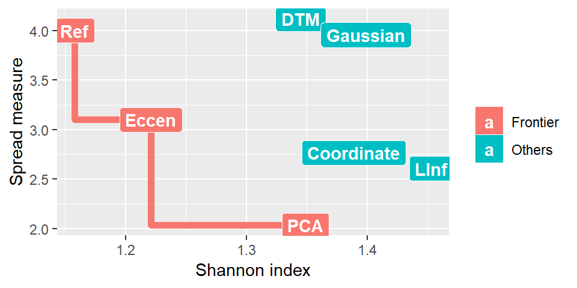

my-vignette.RmdThis package aims to provide a comfortable and flexible way to explore the visualization of data based on Mapper, a topological data analysis method. It provides users with extensive tools to customize the visualization, optimally select filter functions and evaluate the results from Mapper.
To install the latest version of this R package directly from github:
install.packages("devtools")
devtools::install_github("TianshuFeng/SemiMapper")This package provides a function chicken_generator to generate simulation data which is similar to a chicken foot. We will use it to demonstrate the tools of this package.
We start by applying Mapper directly to the simulated data with function mapper.kmeans and generate a graph with the basic visualization function simple_visNet.
library(SemiMapper)
simu_data <- chicken_generator(seed = 1)
simu_data_mapper <- mapper.kmeans(dat = simu_data[,2:4],
filter_values = simu_data$Y,
num_intervals = 10,
percent_overlap = 70)
simple_visNet(simu_data_mapper, filter = simu_data$Y, color_filter = TRUE)In chicken_generator, the argument seed determines the seed to be used in data generation. The first column represent the groups of samples, and the last three columns are the coordinates of samples.
We apply Mapper to the simulated data with function mapper.kmeans modified from function mapper in package TDAmapper. In mapper.kmeans, dat accepts the input data, and filter_values accepts the filter vector. Here we use the Y-axis as the filter. num_intervals and percent_overlap are the number of intervals and the percentage of intervals overlapped, respectively, which decides how simu_data$Y is converted to the set of overlapping intervals.
simple_visNet function visualize the graph from mapper.kmeans. It is capable of flexibly assigning colors to nodes in the graph. In this example, we set color_filter = TRUE and filter = simu_data$Y, and the colors of nodes are determined by the average values of the filters of samples in the nodes.
We can also assign colors with the dominated group under each node with
The colors will be determined by built-in function color_map_Spectral() based on the dominated groups. Users can also define their color function and pass it to argument color_fun. The color function should be able to accept numeric vectors and output hex color codes.
Alternatively, we can specify the colors of groups. This package provides several tools to help the users define colors for the groups. auto_set_colorcode can automatically generate color codes based on given palette. read_color_code can read color codes from local files and turn them into the appropriate format, and check_color_code checks the validity of provided color code data frame.
We demostrate these tools with the following codes:
simu_color <- auto_set_colorcode(simu_data$Group, palette = "Set1")
check_color_code(simu_color)
simple_visNet(simu_data_mapper, color_filter = FALSE,
groups_ind = simu_data$Group,color_code = simu_color)A full list of supported palettes can be found with function display.brewer.all() in package RColorBrewer.
Extra summaries of nodes can be added to the graph with the function network_visualization, which is more powerful in providing additional summaries of nodes than simple_visNet.
The usage of network_visualization is similar to simple_visNet:
tp_data <- chicken_generator(1)
ff <- filter_coordinate(tp_data[,-1], 2)
tp_data_mapper <- mapper.kmeans(dat = tp_data[,2:4],
filter_values = ff,
num_intervals = 10,
percent_overlap = 70)
network_visualization(tp_data_mapper, groups_ind = tp_data$Group, dat = tp_data[,2:4],
folder = "Exp_network")Note that, in this example, we called the function filter_coordinate to get the filter vector, which is the same as tp_data$Y and is one of the filter functions provided in the package. More examples of the filter functions can be found in Example 3.
One difference between network_visualization and simple_visNet is that in network_visualization, the groups of samples must be defined by users because the percentages of groups of samples in each node are part of the basic summary information. Nevertheless, network_visualization can automatically assign colors to groups, and color tools introduced in “Play with colors” can still be used to help the users to define their colors for different groups of samples.
The generated graphs from network_visualization and simple_visnet are also different. Besides the graph itself, the graph from network_visualization contains summaries of nodes which will show up when hovering the mouse cursor on a node. Basic summary information includes the number of samples in the node, the dominated group of the node, the percentages of groups of samples in the node and a pie plot depicting the percentages of groups.
Users can also add customized summaries of nodes to the graph generated by network_visualization, which allows the users to evaluate the graph based on the unique features of the data. This is achieved by passing JavaScript organizing the summaries to add_analysis_java of network_visualization
As shown in Example 2, filter functions are necessary to calculate the filter vectors. This package includes 7 built-in filter functions: filter_ref, filter_pca, filter_Linf, filter_gaussian, filter_coordinate, filter_dtm, filter_eccen as shown in the table below:
| Function | Name | Expression |
|---|---|---|
filter_ref |
Reference | \(f(x_i;y,g) = 1−\text{median}_{y_j=g} d(x_i,x_j)\) |
filter_pca |
PCA | \(f(x_i) = x_i^T\phi_{(1)}\), where \(\phi_{(1)}\) is the eigenvector associated with the largest eigenvalue of \(cov(X)\). |
filter_Linf |
L-infinity | \(f(x_i) = max_{j} d(x_i,x_j)\) |
filter_gaussian |
Gaussian density | density |
filter_coordinate |
Coordinate projection | projection |
filter_dtm |
Distance to measure | \(f(x_i;k) = \sqrt{\frac{1}{k}\sum_{j=2}^{k+1} d^2(x_i,x_{(j)})}\) |
filter_eccen |
Eccentricity | \(f(x_i;p) = (\frac{1}{n}\sum_{j=1}^n d^p(x_i,x_j))^{1/p}\) |
Here we provide an example to show how to call a built-in filter function filter_eccen and pass the obtained filter vector to the mapper.kmeans. filter_eccen has two arguments, dist and p. dist accepts arbitrary distance matrix calculated based on the dataset. Many R functions and packages provide tools to calculate the distance matrix, such as the package philentropy. p is the exponent of the eccentricity filter function.
tp_data <- chicken_generator(1)
tp_dist <- dist(tp_data[,-1])
ff <- filter_eccen(dist = tp_dist, p = 2)
tp_data_mapper <- mapper.kmeans(dat = tp_data[,2:4],
filter_values = ff,
num_intervals = 10,
percent_overlap = 70)
network_visualization(tp_data_mapper, groups_ind = tp_data$Group, dat = tp_data[,2:4],
folder = "Exp_network")On the other hand, if users have the prior knowledge of the data they want to analyze, the reference filter function filter_ref can be a good choice to start with. filter_ref calculates the average distance between each of the samples and a group of reference samples. filter_ref has three arguments, dist, groups_ind and ref. dist accepts the distance matrix calculated based on the data, groups_ind should be a vector where each entry represents the group index of the corresponding sample point in the data, and ref is the index of the reference group. An example is shown below:
tp_data <- chicken_generator(1)
tp_dist <- dist(tp_data[,-1])
ff <- filter_ref(dist=tp_dist, groups_ind=tp_data$Group, ref = "Shank")
tp_data_mapper <- mapper.kmeans(dat = tp_data[,2:4],
filter_values = ff,
num_intervals = 10,
percent_overlap = 70)
network_visualization(tp_data_mapper, groups_ind = tp_data$Group, dat = tp_data[,2:4],
folder = "Exp_network")Besides the built-in filter functions, users can also define their standard filter functions. While mapper.kmeans can accept any numeric vector as a filter, the optimization function filter_evaluate can only accept filter object from standard filter functions. The return value from a standard filter function should have two attributes: class and filter. class should always be “filter”, and filter contains the name of the corresponding filter function. An example of a standard filter function is:
We can generate many graphs under the filter functions. While we can manually and empirically select graphs based on the domain knowledge we have about the data, it is important to evaluate these graphs objectively based on the prior knowledge of the data with some measures. In this section, we introduce two measures that can effectively assess the graphs from different aspects by comparing the graphs with the prior knowledge we have about the data.
Shannon index [17] is an evaluation method measuring how diverse each node is. Specifically, given one node \(X_k\), and assuming samples are from \(L\) different labels, the Shannon index is defined as follows: \[\begin{array}{rl} H(X_{k}) &\displaystyle = − \sum_{l=1}^{L} p_l\log p_l\\ p_l &\displaystyle = \frac{|\{ x_{i} | x_{i} \in X_{k} \text{ and } y_i = l \} |}{|X_{k}|}. \end{array}\] where \(|.|\) denotes the number of elements in a set.
Taking into account that the sizes of nodes are usually different, we measure the overall diversity of a graph as the weighted average of the Shannon indices weighted by the sizes of the nodes, which is \[\bar{H}_f = \frac{ \sum_{j,k} |X_{k}| H(X_{k}) }{\sum_{j,k} |X_{k}|}.\] Here, the subscript \(f\) of \(\bar{H}_f\) emphasizes that \(\bar{H}_f\) depends on the filter function \(f\). Therefore, a small \(\bar{H}_f\) implies the data points with different labels are well separated in different nodes, and the graph is good overall concerning node-wise diversity.
We demonstrate the calculation of Shannon index with the chicken foot example.
Although Shannon index can evaluate nodes of a graph, it neglects the connectivity of nodes. For example, these measures cannot detect the situation when two similar nodes containing samples with similar labels are separated from each other in a graph.
To compensate the Shannon index and evaluate graphs regarding the connectivity of nodes, we describe a heuristic sample-wise measure to evaluate how samples with the sample labels concentrate on a generated graph considering the structure of the graph. This measure is obtained as follows. First, for each data point in each of the nodes, we calculate the average distance between it and other data points with the same labels in the graph, where the distance is the length of the shortest path between nodes containing these points. Then we average the distance across all the data points. Mathematically, for one data point \(x_i\) in a node \(X_k\), the average distance is defined as \[ sp_{X_{k}}(x_i) = \frac{\sum_{\substack{k‘}} |\{ x\in X_{k‘}| y=y_i \}| q(X_{k}, X_{k‘}) }{\sum_{\substack{k‘}} |\{ x\in X_{k‘}| y=y_i \}|}\] where \(q(X_{k}, X_{k‘})\) is the length of the shortest path between nodes \(X_{k}\) and \(X_{k‘}\). Note that, in this measure, we focus on the largest connected subgraph and ignore the points not included in the largest subgraph. For computational simplicity, duplicate data points appearing in multiple nodes are as different data points. The overall measure for the spread of data points in a graph is then \[ \bar{sp}_f = \frac{ \sum_{\substack{i,k}} sp_{X_{k}}(x_i) }{\sum_{k} |{X_{k}}| } \] where the subscript \(f\) of \(\bar{sp}_f\) emphasizes that \(\bar{sp}_f\) depends on the filter function \(f\). A small \(\bar{sp}_f\) indicates the nodes with similar samples are concentrated in a graph, and a graph is overall good regarding the connectivity of nodes.
We demonstrate the calculation of the spread measure with the chicken foot example.
tp_data <- chicken_generator(1)
tp_data_mapper<- mapper.kmeans(dat = tp_data[,2:4],
filter_values = tp_data$Y,
num_intervals = 10,
percent_overlap = 70)
tp_spread <- spread_measure(tp_data_mapper, tp_data$Group)
tp_spreadIt is worth noticing that \(\bar{H}_f\) and \(\bar{sp}_f\) measures the graph from two different aspects. \(\bar{H}_f\) indicates whether labels of data points in each of the nodes in the graph are diverse or not in terms of data points’ labels, regardless of the connectivity of nodes, while \(\bar{sp}_f\) implies if data points with the same labels from different nodes concentrate in the graph, it does not explicitly assess the clustering results and does not consider nodes not connected to the largest subgraph. Therefore, in practice, both measures should be taken into consideration when evaluating and diagnosing a graph from the Mapper. For example, large \(\bar{H}_f\) and small \(\bar{sp}_f\) imply the existence of large nodes consisting of many data points, while small \(\bar{H}_f\) and large \(\bar{sp}_f\) may indicate some data points with the same label are separated in the graph which requires more analysis based on the prior information of the data and the graph.
After generating graphs under different filter functions, the evaluation methods in Example 4 enable us to evaluate and compare the graphs from different aspects. The last problem is to find the optimal graphs regarding these measures. We solve this problem by borrowing methods for multi-objective optimization problems.
Given graphs generated under a set of filter functions \(F\), the problem of selecting the optimal filter functions can be formulated as \[f=\text{argmin}_{f \in F} (\bar{H}_f, \bar{sp}_f).\]
We solve this problem by finding the pareto frontier. In this problem, the pareto frontier is defined as \[\{f \in F| \{f‘ \in F|f‘\ne f,\bar{H}_{f‘} < \bar{H}_{f} \text{ and } \bar{sp}_{f‘} < \bar{sp}_{f} \} = \emptyset \}.\]
We generate an illustration of the pareto frontier with the package ggplot2 and the function pareto_opt from the SemiMapper package assuming we have measures on seven graphs generated under different filter functions. First, we find the filter functions on the Pareto frontier with pareto_opt. Note that pareto_opt accept data.frame as input where the first column is the names of the filter functions and the second and third columns should be the corresponding Shannon indices and spread measures
library(SemiMapper)
filter_names <- c("Coordinate","Eccen","LInf","Ref","DTM","Gaussian","PCA")
res_filter <- data.frame(Filter = filter_names,
weighted_shannon = c(1.389, 1.221, 1.453, 1.158, 1.345, 1.399, 1.349),
spread_measure = c(2.767, 3.101, 2.607, 4.001, 4.119, 3.957, 2.034))
res <- pareto_opt(res_filter)
#> Loading required package: rPref
print(res)
#> Filter functions in the Pareto frontier:
#>
#>
#> Evaluation results of filter functions in the Pareto frontier:
#> Filter weighted_shannon spread_measure
#> 2 Eccen 1.221 3.101
#> 4 Ref 1.158 4.001
#> 7 PCA 1.349 2.034Then, we plot the results with ggplot2:
# Illustration of Pareto frontier
library(ggplot2)
res <- pareto_opt(res_filter, top = nrow(res_filter))
res$.level[res$.level>1] <- "Others"
res$.level[res$.level==1] <- "Frontier"
class(res) <- "data.frame"
gp <- ggplot(res, aes(x = weighted_shannon, y = spread_measure,
color = factor(.level),
label = Filter)) +
geom_point(size = 3) +
geom_step(aes(group = .level), data = res[res$.level=="Frontier",],
direction = "vh", size = 2) +
geom_label(aes(fill = factor(.level)), colour = "white", fontface = "bold") +
labs(fill='') + labs(color='') + xlab("Shannon index") +
ylab("Spread measure")
In the graph, the red line represents the Pareto frontier, the red squares represent the filter functions on the Pareto frontier, and the blue squares represent the filter functions not in the Pareto frontier.
The package also provides a function, filter_evaluate, for users to efficiently get the measures for the graphs generated under different filter functions. It accepts arbitrary number of filter vectors from the filter functions and returns the measures as a data.frame object that can be directly used in the pareto_opt function. An example of using the filter_evaluate function is shown below for three filter functions on the chicken foot example:
tp_data <- chicken_generator(1)
tp_dist <- dist(tp_data[,-1])
fe <- filter_eccen(dist = tp_dist, p = 2)
fc <- filter_coordinate(tp_data[,-1], 2)
fg <- filter_gaussian(dist=tp_dist, sigma=1)
res_eval <- filter_evaluate(fe,fc,fg,
dat = tp_data, group_ind = tp_data$Group,
num_intervals = 10, percent_overlap = 70)Then the results can be passed to the pareto_opt function.